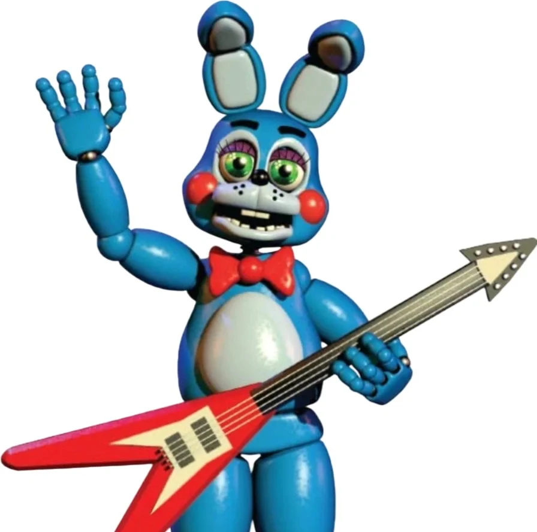
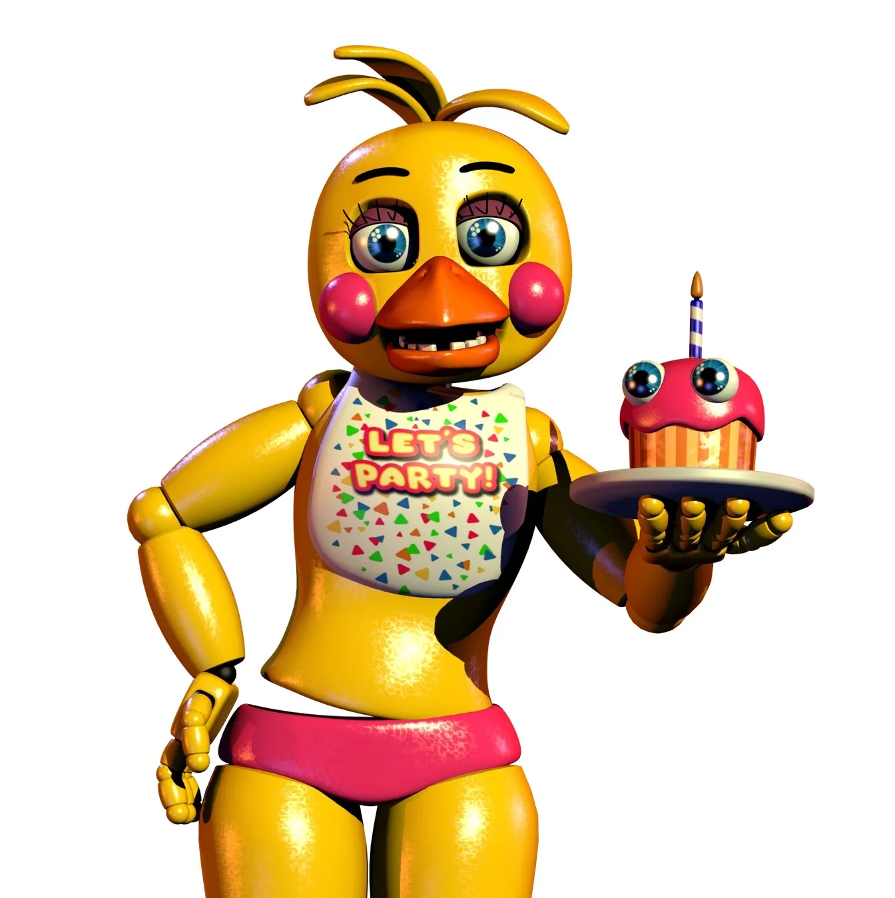

Em 1987, a Fazbear Entertainment promoveu a sua inesquecível "Grand Re-Opening". Investindo pesado em um visual reluzente, salões gigantescos e uma frota inteiramente nova de mascotes, essa unidade foi projetada para ser o local mais seguro e moderno do planeta para as famílias.
Freddy Fazbear's Pizza (1987)
Onde a tecnologia de ponta e o design futurista redefiniram a diversão.
Os Modelos "Toy"
Para refletir os novos tempos, os velhos trajes foram armazenados e substituídos por versões amigáveis, feitas de plástico polido e acabamento impecável:

Toy Freddy
A versão moderna do nosso querido líder. Com bochechas coradas e visual refinado, comandava os shows com elegância e simpatia.

Toy Bonnie
Com um acabamento em vinil azul brilhante e olhos expressivos, Toy Bonnie trazia solos de guitarra ainda mais dinâmicos ao palco.

Toy Chica
Sempre acompanhada do seu Cupcake reestilizado, ela era a estrela das festas de aniversário e da distribuição de doces no salão.

The Mangle
Originalmente Toy Foxy, foi adaptado para a área Kid's Cove como uma atração interativa de "monte e desmonte", estimulando a criatividade dos pequenos.
Segurança Avançada e Reconhecimento Facial
A grande inovação de 1987 foi a integração de sistemas de segurança governamentais diretamente no endoesqueleto dos animatrônicos. Cada modelo Toy contava com scanners de **Reconhecimento Facial** conectados a um banco de dados local.
"Mobilidade total durante o dia e um sistema de proteção ativa projetado para manter qualquer ameaça longe das nossas crianças."
Além da segurança, esses robôs possuíam articulações avançadas que os permitiam caminhar livremente pelo salão entre as mesas durante o dia, interagindo diretamente com o público e tirando fotos com os visitantes.
Uma Edição Especial e Limitada
Apesar do sucesso estrondoso de público, a linha "Toy" teve uma vida curta. Os custos de manutenção da altíssima tecnologia de reconhecimento facial e pequenos bugs operacionais tornaram o modelo insustentável a longo prazo.
Após poucas semanas de operação intensiva, a unidade de 1987 encerrou suas atividades como uma "edição especial de reabertura". A empresa optou por descartar os protótipos de plástico e guardar os modelos clássicos para a reestruturação da marca anos mais tarde.
A era de 1987 provou a capacidade da Fazbear Entertainment de se reinventar e ousar na engenharia do futuro!